Практичні курси · журнал «ДентАрт» 2017 №4
Стертість зубів: концепція повного макетування
INDIRECT ANTERIORS – INDIRECT POSTERIORS – CASES – TIPS AND TRICKS. WORN DENTITION; THE FULL MOCK UP CONCEPT
Лікування стертості зубів – це потрійно складна процедура для стоматолога, оскільки:
1) з точки зору естетики – зуби занадто короткі;
2) з біологічної точки зору – структура зуба має залишатися максимально здоровою і неушкодженою;
3) з точки зору функціональності – щоб подовжити зуби фронтальної групи, слід заново сформувати оклюзію.
Який план лікування можна запропонувати, щоб виконати перераховані вище вимоги? Коли стоматолог стикається з пацієнтом, у якого через стирання зубів плоска лінія усмішки, важливо попередньо отримати уявлення про ситуацію, тобто зрозуміти, які зміни слід внести в «білу естетику» – зуби, щоб отримати нову лінію усмішки. Результат можна спрогнозувати, застосовуючи цифрові технології: за допомогою зображень або за допомогою приладу Ditramax, який дозволяє максимально точно зробити позначки на моделі з урахуванням орієнтирів на обличчі.
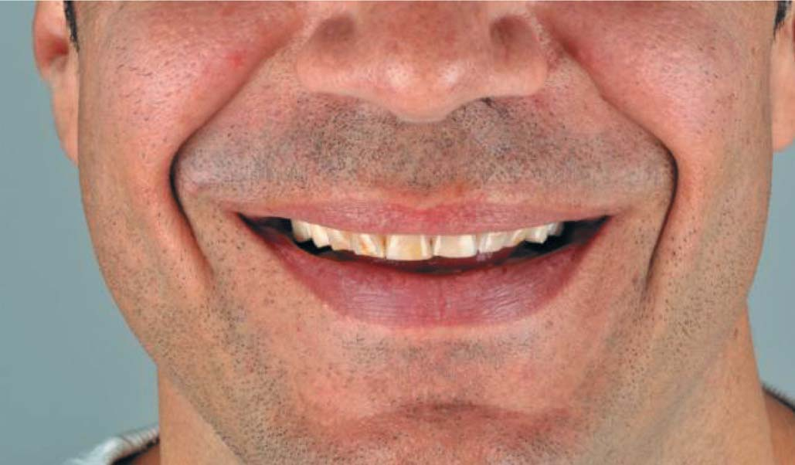
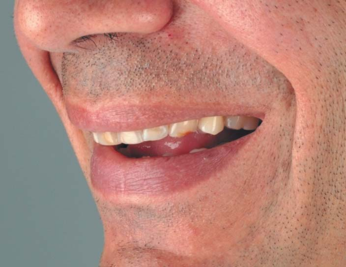
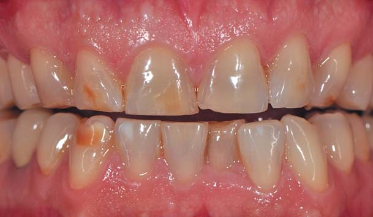
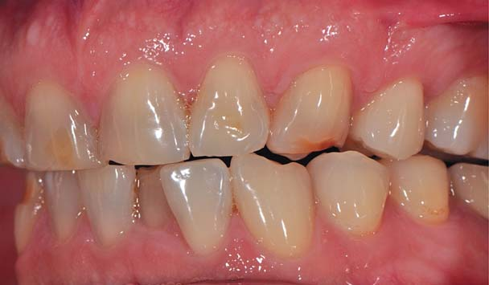
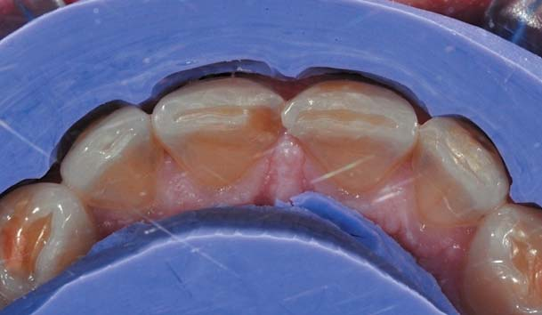
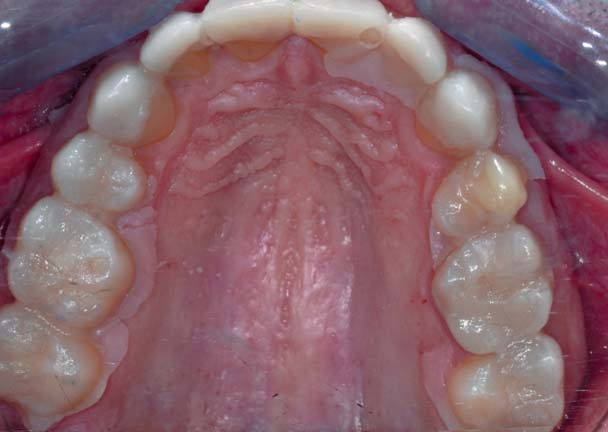
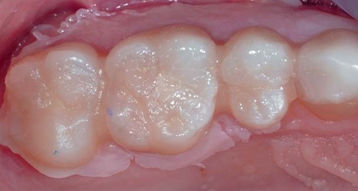
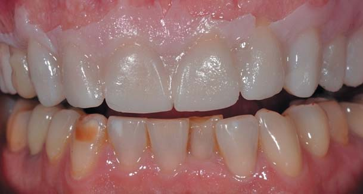
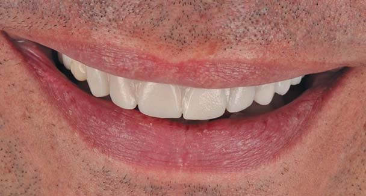
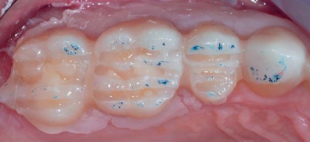
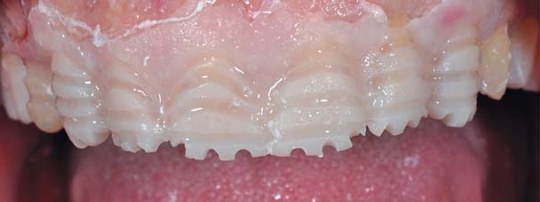
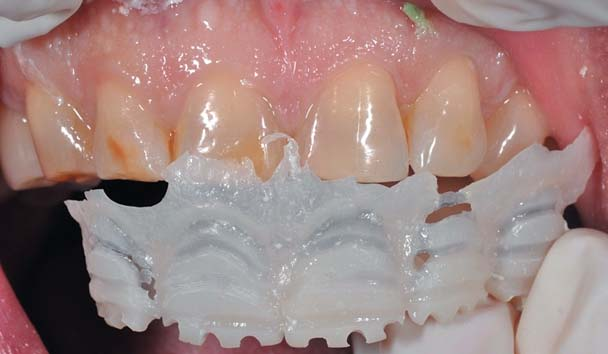
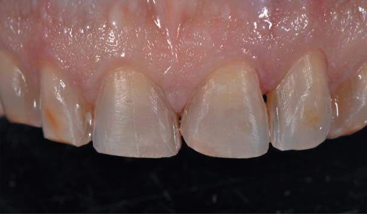
Коли поглиблення, призначені для керованого препарування, готові, можна надати відпрепарованій ділянці остаточної форми. Така процедура має бути простою, і ось основні рекомендації:
- перекрити горбики, якщо вони вже занадто тонкі;
- подовжити щічний горбик, якщо цього вимагає естетика чи лінія усмішки;
- зберегти крайовий гребінь (1 мм з внутрішньої сторони) або перекрити гребінь, якщо він стертий;
- між горбиками слід створити плавну і рівну форму.
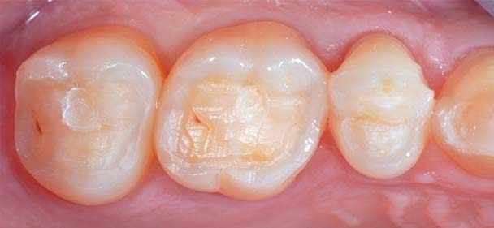
Оклюзійні поверхні виготовляються методом пресування дисилікату (e.max Press HT), який характеризують фарбуванням. Крім того, завдяки техніці пресування можна виконати дуже тонку накладку (мінімальна товщина – 0,5 мм). За рахунок чого можна виконати товщину 0,5 мм, а не традиційні 1,5 мм? При розгляді оклюзійної поверхні нижнього зуба ми виявимо, що вплив навантаження проходить по осі. Таким чином, навантаження діє на реставраційну конструкцію тільки під час стиснення по вертикальній осі, в той час як на накладки діє сила і стиснення, і розтягування. Природний крайовий гребінь буде, як і раніше, виконувати свої функції замість матеріалу.
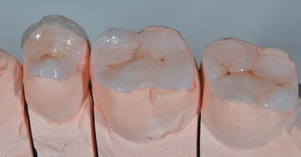
У певних випадках з премолярами можна застосувати «концепцію сендвіча», запропоновану Франческою Вайлаті/Vailati (2008 р.), щоб зберегти максимальну кількість здорової тканини зуба. Концепція полягає в ідеї виготовлення двох реставраційних одиниць – вініра для вестибулярної і накладки для оральної поверхні замість повноцінної коронки, що дозволяє зберегти більший обсяг тканини і поліпшити ретенцію на зубі. Якщо дефект масштабніший і ретенція неможлива, можна спробувати зафіксувати лише одну реставраційну конструкцію.
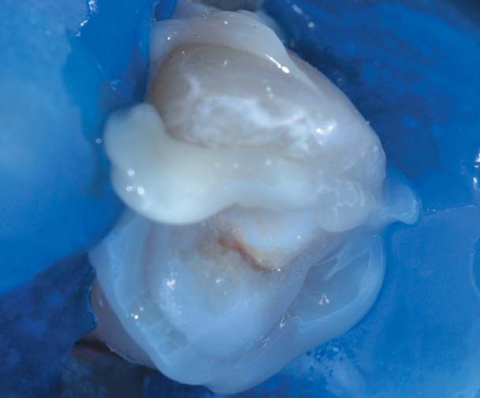
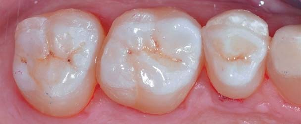
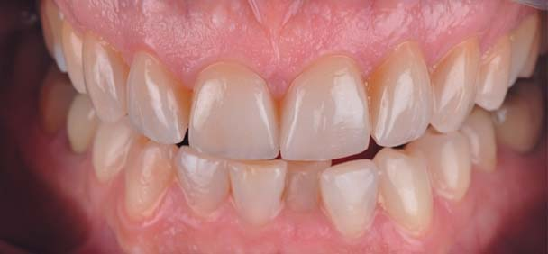
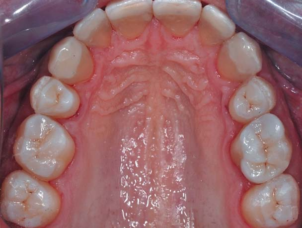
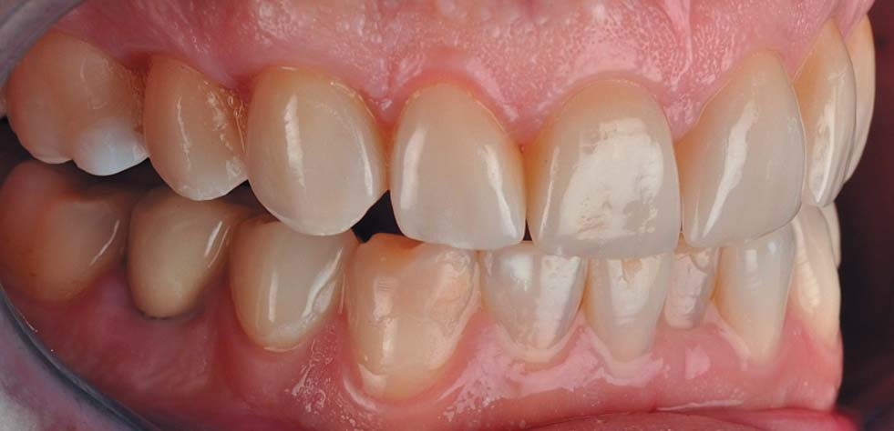
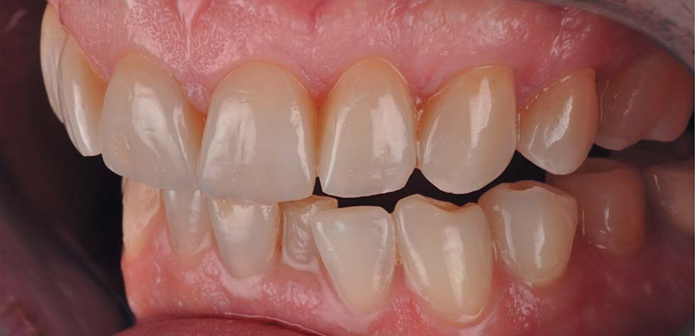
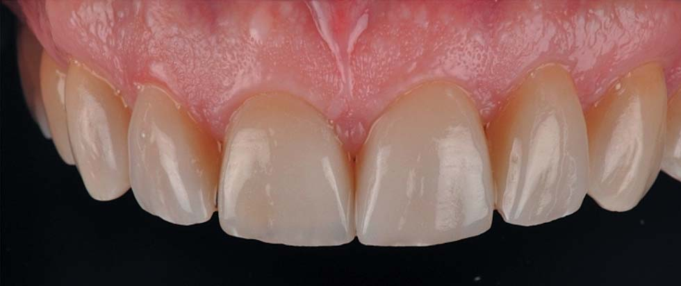
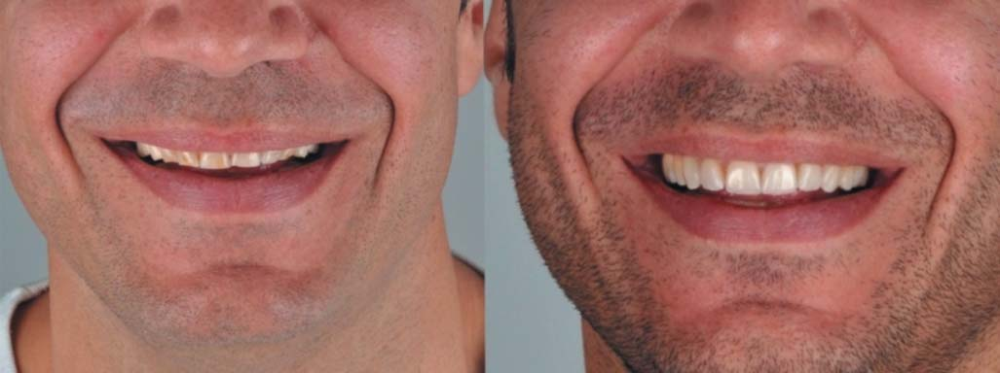
Висновки
Лікування зубів зі стертістю – непросте завдання для стоматолога. Сучасні методики мають відповідати мінімально інвазивному підходу. Клінічний протокол також повинен відповідати реальності (тобто бути здійсненним, доступним і відтворюваним). Саме тому для щоденної практики більше підходить методика мінімально інвазивного препарування, ніж методика без препарування.
Література
- Koubi S, Gürel G, Margossian P, Massihi R, Tassery H. Nouvelles perspectives dans le traitement de l'usure: les tables top. Real Clin 2013; 24 (4): 319-330.
- Koubi S, Gürel G, Margossian P, Massihi R, Tassery H. Traitement de l'usure: role fondamental du projet esthetique et fonctionnel. Inf Dent 2014; 96 (31): 66-80.
- Koubi S, Gürel G, Margossian P, Massihi R, Tassery H. Preparations posterieures a minima guidees par le mock up dans les traitements de l'usure. Rev Odont Stomat 2014; 43 (3): 231-249.
- Koubi S, Gürel G, Margossian P, Massihi R, Tassery H. Aspects cliniques et biomecaniques des restaurations partielles collees dans le traitement de l'usure: Les table top. Real Clin 2014; 25 (4): 327-336.
- Koubi S, Gürel G, Margossian P, Massihi R, Tassery H. Le projet esthetique et fonctionnel: nouveau GPS de la dentisterie moderne. Rev Int de Proth Dent 2014, n°4: 257-272.
- Lussi A., Jaeggi T. L'erosion dentaire, diadnostic, evaluation du risque, prevention, traitement. Quintessence International 2012; Chapitre I, 1-13.
- Vailati F, Belser U. Full month adhesive rehabilitation of a severely eroded dentition: 3 step technique part 1. Eur J Esthet Dent. 2008 Spring;3(1):30-44.
- Vailati F, Belser U. Full month adhesive rehabilitation of a severely eroded dentition: 3 step technique part 2. Eur J Esthet Dent. 2008 Summer;3(2):128-46.
- Vailati F, Belser U. Full month adhesive rehabilitation of a severely eroded dentition: 3 step technique part 3. Eur J Esthet Dent. 2008 Autumn;3(3):236-57.
- Spreafico R. Composite resin rehabilitation of eroded dentition in a bulimic patient: a case report. Eur J Esthet Dent. 2010 Spring; 5(1):28-48.
- Dietschi D, Argente Ana. A comprehensive and conservative approach for the restoration of abrasion and erosion. Part 1. Concept and clinical rational for early intervention using adhesive techniques. Eur J Esthet Dent. 2011 Spring;6(1):20-33.
- Fradeani M, Barducci G, Bacherini L, Brennan M. Esthetic rehabilitation of a severely worn dentition with minimally invasive prosthetic procedures (MIPP). Int J Periodontics Restorative Dent. 2012 Apr;32(2):135-47.
Статтю переклали і підготували у компанії CRYSTAL Pharma